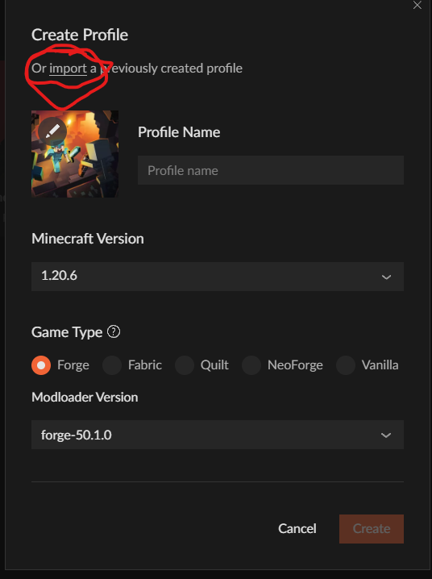
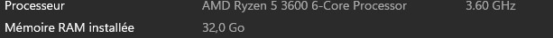

Guide d'Installation
Suivez ces étapes simples pour rejoindre notre serveur :
Étape 1 : Télécharger CurseForge avec le lien ci-dessus
(Assurez-vous d'avoir la dernière version de Minecraft installée sur votre appareil.)
Étape 2 : Téléchargement du modpack
Télécharger le modpack avec le lien également ci-dessus
Étape 3 : Installation du modpack
Une fois CurseForge installé et le modpack téléchargé, exécutez-le puis cliquez sur "+Create Custom Profile" en haut

Puis, cliquez sur Import et trouvez le modpack que vous avez téléchargé
Si tout s'est bien passé, vous revenez sur le menu principal et vous n'aurez plus qu'à cliquer sur jouer en passant votre souris sur 1.20.4 My creation.
-Précision : pour jouer sur le serveur, vous devez impérativement passer par CurseForge à chaque lancement
Étape 4 : Jouer
Une fois sur le launcher de Minecraft, vous n'avez plus qu'à cliquer sur "Jouer" et à rejoindre le serveur. Amusez-vous bien !
Si possible, ajoutez un maximum de mémoire RAM (de ressources au jeu), pour ce faire :
- Cliquez sur Configurations
- Sélectionnez 1.20.4 et cliquez sur les trois petits points
- Cliquez sur modifier
- Cliquez sur "plus d'options"
- Dans "ARGUMENTS JVM", modifiez la RAM en écrivant le nombre de RAM disponible sur votre PC
- Pour connaître la RAM disponible sur votre ordinateur, vous pouvez faire un clic droit sur le menu Windows, puis cliquer sur Système. Vous verrez alors les caractéristiques de votre ordinateur 
- Modifiez alors la RAM que votre jeu va utiliser. Ajoutez un maximum disponible, je recommande 16 Go, mais si vous avez moins, mettez moins
- Cliquez sur Enregistrer et vous pouvez jouer et rejoindre le serveur normalement
Si vous rencontrez des problèmes de performance en jeu malgré cela, n'hésitez pas à me contacter, on avisera avec les mods